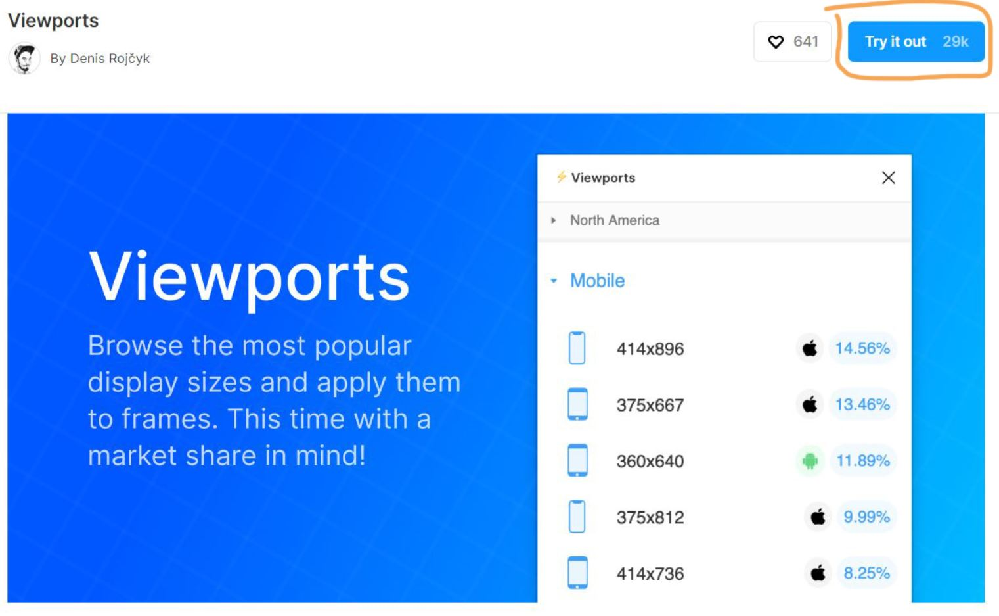
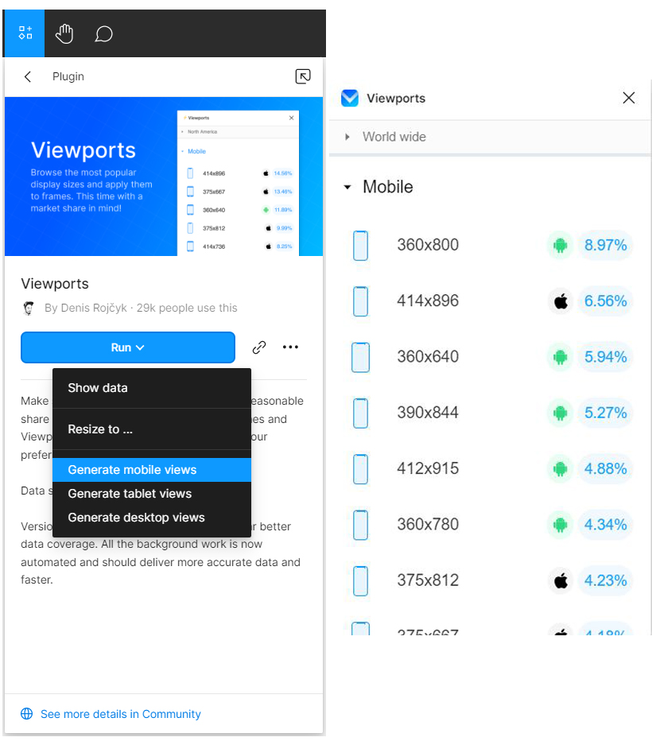
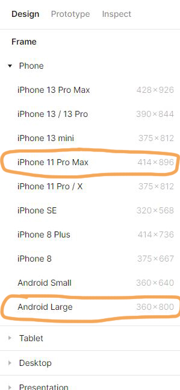

Figma plugin
When we are designing in design tools like Figma, one of the first steps is to choose the device as the main frame for our design.
There are several phone devices that can be chosen in the frame tab in Figma. Figma assumes the latest iPhones and general Android sizes (small or large) as the base frame dimension.
But how do we choose which device is mostly used by people? Asking this question may reduce thinking time and help with certainty.
One way to find out is by using Figma's plugin called Viewports, which was created by Denis Rojčyk. Viewports allows user to see the most popular device sizes. To use the plugin, we can simply click on the “Try it out” button on the top right and it will redirect us to Figma canvas.
We can then run the plugin and see which device is the most popular in 2022. As can be seen from the picture on the right, the most popular device frames are 360x800 for Android device and 414x896 for iOS device.
Reference(s):
Viewports Figma plugin by Denis Rojčyk accessed on July 11 2022 at 12:30 PM GMT+07:00